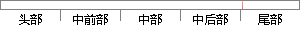

以达到按时按量完成任务的目标为宗旨。
片段位置图

相似结果|
相似片段 1：发展。651)评价指标A．按时按量完成任务评价指标“按时按量完成任务”主要用于评价服务是否完成。按时按量地完成分包任务，是承包Agent对各子Agent的最起码要求，也是分包服务最终极的目标，以及服务
|
※ 片段修改建议 ※
近似词参考：- 达到：到达
- 按时：定时
- 目标：方针 目的
- 宗旨：主旨
系统自动生成语句：以到达定时按量完成任务的方针为主旨。
注：本片段修改建议为系统自动生成，仅供参考。